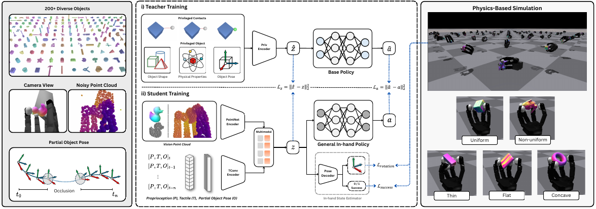
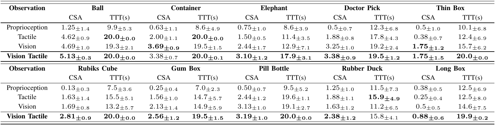

ViTacDex learns through a two-stage teacher–student framework. In simulation, a teacher policy learns using privileged information about object shape, state and contact. A student policy then learns to reproduce the teacher’s behavior using proprioception, tactile contact features, partial point clouds and intermittently available object-pose estimates. Visual domain randomization exposes the student to clutter, occlusion and unreliable pose feedback. The resulting single goal-conditioned student policy is used across different target orientations.
Main Results

We evaluate policies using proprioception, touch, vision and combined visuo-tactile sensing across ten objects in the real world. Cumulative Success Average (CSA) measures how many target orientations are reached in succession, while Time to Terminate (TTT) measures how long manipulation continues before the object gets stuck or falls. Combining vision and touch delivers the strongest overall performance, with tactile feedback helping maintain a stable grasp. The table reports performance and variability for each sensing configuration.